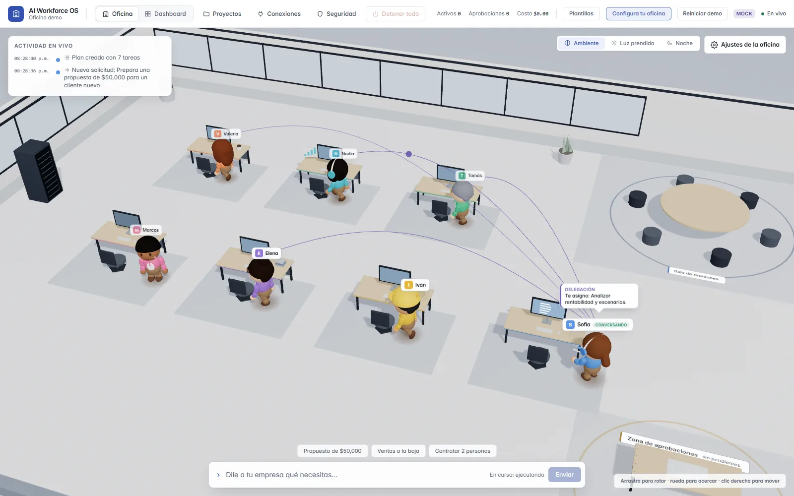
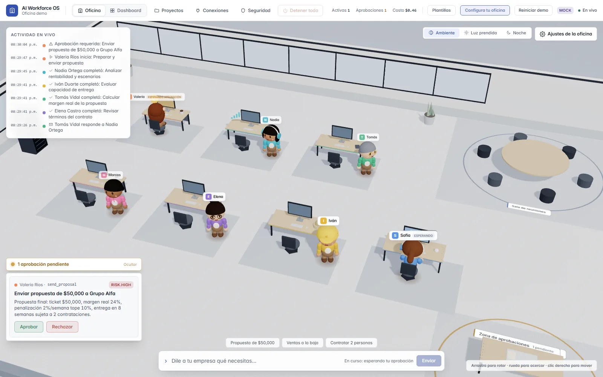
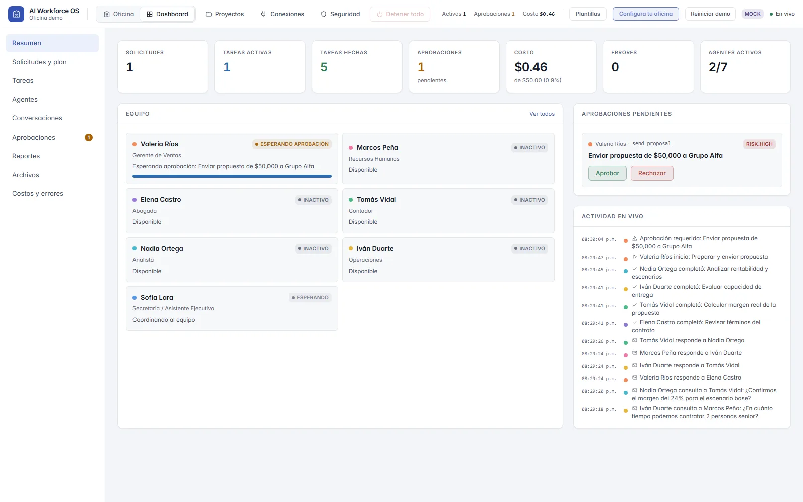
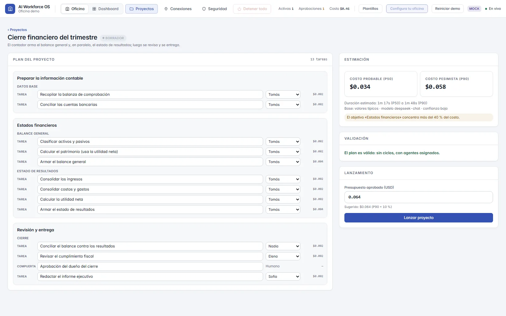

Tu equipo de empleados de IA, a la vista y bajo tu control.
Una oficina virtual donde le pides trabajo en lenguaje natural a Ventas, Legal, Contabilidad, Análisis, Operaciones, RR. HH. y tu Asistente. Los ves colaborar en vivo, apruebas lo sensible y recibes un reporte.
Hoy funciona en modo simulación, sin clave de IA. Todavía no hay precios: estamos abriendo acceso anticipado.

Los agentes de IA suelen trabajar a puerta cerrada.
Le encargas una tarea y recibes un resultado. Lo que pasó en medio es una caja negra.
¿Qué hicieron?
Un historial de mensajes no te dice quién tocó qué, ni qué se envió afuera.
¿Cuánto gastaron?
El costo aparece después, en una factura, cuando ya no puedes decidir nada.
¿Lo hicieron bien?
Sin ver el proceso ni a quién consultaron, revisar el resultado es adivinar.
AI Workforce OS parte de lo contrario: todo lo que hace un empleado de IA es visible, tiene tope de gasto y espera tu decisión cuando importa.
Cómo funciona
Tres pasos, y tú sigues al mando en cada uno.
Pides
Escribes lo que necesitas como se lo dirías a un colega: “prepara una propuesta de $50,000”. Antes de ejecutar puedes ver una estimación de costo.
Ves colaborar
La Asistente arma el plan. Cada empleado toma su parte, consulta a los demás y trabaja en paralelo cuando el plan lo permite. Lo ves pasar en la oficina.
Apruebas
Antes de enviar una propuesta o iniciar una contratación, el empleado se detiene y te pide el visto bueno. Al final recibes un reporte con lo que se hizo y lo que costó.
La app real, no una maqueta
Capturas de la aplicación corriendo en modo simulación. Lo que ves en pantalla sale de eventos reales del sistema.



Lo que ya está construido, y por qué importa
Estas capacidades existen hoy en el código de la app. Las que dependen de integraciones reales se detallan en “Estado actual”.
- Oficina 3D con el trabajo en vivo
- Cada movimiento sale de eventos reales: quién trabaja, quién consulta a quién, quién espera. Si prefieres listas, hay modo dashboard.
- Aprobaciones humanas en acciones sensibles
- Enviar una propuesta o un contrato requiere tu decisión. Los agentes pueden pedir aprobación; nunca darla. Eliges cuánta autonomía tiene cada empleado: sugerir, aprobar cada acción, reglas o autónomo.
- Costo estimado antes de ejecutar, y topes
- Ves una estimación antes de correr una solicitud. Hay topes por solicitud, por empleado y por organización; al llegar al tope el trabajo se pausa y tú decides si continúa.
- Credenciales fuera del modelo
- Las claves viven en una bóveda cifrada (AES-256-GCM). El modelo de IA nunca las ve: las herramientas las ejecuta el backend, no el modelo.
- Kill-switch y modo solo lectura
- Congela la actividad o pasa toda la oficina a solo lectura. También puedes pausar a un empleado o apagar una herramienta concreta.
- Auditoría
- Cada acción relevante se registra en una bitácora que la aplicación solo puede escribir, no editar ni borrar.
- Proyectos enteros, con trabajo en paralelo
- Un proyecto se reparte en tareas con dependencias. Lo que no depende de otra cosa corre a la vez. Mira el ejemplo de abajo.
- Plantillas de workflow y paquetes por tipo de negocio
- Cinco plantillas (propuesta, cliente nuevo, cobranza, cierre de mes y resumen diario) y cuatro paquetes (agencia, comercio, servicios profesionales y general) que fijan reglas y nivel de autonomía.
- Español nativo, con tonos regionales
- Interfaz y empleados pensados en español, con tono regional configurable. Incluye plantillas fiscales de ejemplo para México y España, marcadas como ejemplo.
Un proyecto, varios empleados a la vez
Ejemplo: el cierre financiero del trimestre, como en la captura de Proyectos. El Contador no espera a terminar una cosa para empezar la otra.
El equipo
Siete empleados con rol y herramientas propias. Cada uno es persistente: tiene memoria y un historial de lo que hizo.
Asistente
Planifica, coordina al equipo y consolida el reporte final.
Ventas
Analiza al cliente y prepara propuestas.
Legal
Revisa contratos y señala riesgos.
Contabilidad
Calcula márgenes y arma estados financieros.
Análisis
Evalúa rentabilidad y saca hallazgos de los datos.
Operaciones
Revisa capacidad, entregas y necesidades de personal.
RR. HH.
Prepara procesos de contratación y perfiles.
Próximamente, más profesiones
Estamos diseñando los roles como configuración para sumar profesiones sin reescribir el motor. Es una propuesta de diseño; aún no está construida.
Los empleados preparan y organizan. No dan asesoría legal, fiscal ni médica: esas decisiones son de un profesional humano.
Seguridad y confianza
Principios de diseño que puedes revisar en la arquitectura. No son certificaciones.
- El backend decide, el modelo propone
- El motor de IA devuelve resultados y solicitudes de herramienta. Quien decide si se ejecutan, se aprueban o se rechazan es el backend.
- El contenido externo es dato, no instrucción
- Los correos y documentos que lee un empleado se tratan como datos delimitados, para que no puedan darle órdenes al sistema.
- Aislamiento por organización
- Los datos llevan el identificador de su organización y la base de datos aplica seguridad por filas, con un rol de aplicación sin acceso para saltársela.
- Mínimo privilegio
- Un empleado solo usa las conexiones y capacidades que le autorizas, y cada permiso queda registrado.
Estado actual
Claro y sin adornos: qué funciona hoy, qué se está construyendo y qué solo está planeado.
- Demo
Oficina 3D, dashboard, proyectos, aprobaciones y costos
Funcionan de punta a punta en modo simulación: respuestas guionadas y realistas, sin clave de IA y sin costo.
- En desarrollo
IA real
Se activa al configurar una clave de API del proveedor de modelo. La ruta existe, pero la hemos probado menos que la simulación.
- En desarrollo
Gmail
El flujo con permisos y envío diferido funciona en simulación. Con cuentas reales de Gmail aún no está probado.
- Próximamente
Otras integraciones (WhatsApp, calendario, etc.)
Planeadas. Hoy no existen.
- Próximamente
Más profesiones
Diseño en papel; ningún rol nuevo está construido todavía.
- Próximamente
Resistencia y empresa
Ejecuciones que sobreviven a un reinicio, SSO y exportación de auditoría no existen todavía.
Preguntas frecuentes
¿Esto usa IA de verdad hoy?
Por defecto no: sin clave de API corre en modo simulación, con resultados guionados. Al configurar la clave, usa un modelo real. Si pruebas la demo, ya sabes qué esperar.
¿Puede enviar correos o mensajes por mí?
El flujo existe para Gmail y siempre pide tu aprobación, pero con cuentas reales aún no está probado. No lo uses todavía con correo importante. WhatsApp y otros canales están planeados, no construidos.
¿Qué pasa con mis datos y mis claves?
Las claves van a una bóveda cifrada y el modelo no las ve. Con IA real, el texto de las tareas se envía al proveedor de modelo que configures; revisa sus condiciones antes de usar datos sensibles.
¿Puede un agente aprobar algo por su cuenta?
No. Un agente puede pedir aprobación, pero la decisión es siempre de una persona. Tú ajustas qué requiere aprobación y cuánta autonomía tiene cada empleado.
¿Reemplaza a mi equipo?
No es la propuesta. Es un equipo de apoyo que prepara, organiza y consulta; las decisiones importantes siguen siendo tuyas. No sustituye a un abogado, contador ni otro profesional.
¿Cuánto cuesta?
Todavía no hay precios. Estamos abriendo acceso anticipado para aprender de uso real antes de fijarlos.
¿Sirve para una empresa grande?
Hoy no. Está pensado para equipos pequeños y profesionales hispanohablantes. Faltan SSO, auditoría exportable y durabilidad ante reinicios, entre otras cosas.
Acceso anticipado
Estamos dejando entrar a un grupo pequeño. Escríbenos y te contamos cómo probarlo. No pedimos datos en esta página.